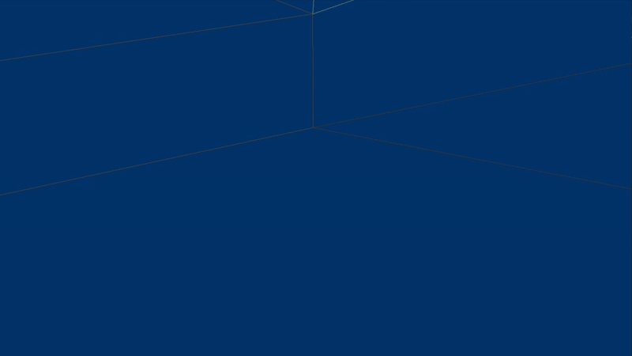

Side projects
 The Fires of a Thousand Suns repo ⇗
The Fires of a Thousand Suns repo ⇗
My second Unreal Engine 5 project, using C++ this time. This is a replica of a boss fight from the game Path of Exile. This project has been remarkably well received by the community ⇗ and is now a valuable asset for players, as it allows them to train this fight whenever they want. Normally, a player has to play several hours to have a "ticket" to the boss fight.
Details
The aim was to learn how to use Unreal's C++ ecosystem. Various game system were built to be solid bases for a typical RPG game. Health and damage, abilities, cooldown, buffs, statistics, etc...
Arcade Game inspired from Gradius
This is my first Unreal Engine 5 project, blueprint only. I chose to make a Gradius-like to get my hands on the engine. This is a technical demo, levels are intentionally short and easy.
Details
All of this work was done myself, no plug-ins were used for the gameplay. Only 3D models, images and audio were imported.What I learned to use during this project: Levels/Scenes, GameInstance and GameMode, Input modes, Actor and ActorComponents, Projectile Component, Function and Macro Library, SaveGame, Key bindings, Event calls and bindings, Collision presets, UI Widgets, UI Animation, Materials, NiagaraSystem, Damage system and more...

 PIPO The Ghost - GameJam
PIPO The Ghost - GameJam
Small puzzle game done on Unity during a Ludum Dare in 2019, in a group of 4 friends. I worked on the ghost movements and some level design.
Presentation ⇗ | Video ⇗ | Download ⇗

Voxel engine prototype - repo ⇗
A typical minecraft game using octrees, procedural generation, multithreading.

 Among Us detector - repo ⇗
Among Us detector - repo ⇗
During r/place 2022, the Among Us community drawn a lot of their beloved character on the canvas. This script finds every character hidden in an image. All the images were then assembled to create a video timelapse ⇗.